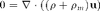
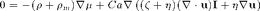

Contents
function CahnHilliard_InfCapillary()
%************************************************************************* % % Contact angle always theta = pi/2 (meaning no pressure jump across the interface) % % (Eq) 0 = 1/Cn * dW/drho - Cn*Lap(rho) - mu % with W(rho) = (1-rho^2)^2/(2*Cn) % % with (BC Wall) 0 = Cn*normal*grad(rho_s) + cos(theta)*(rho-1)*rho % = Cn*normal*grad(rho_s) % (BC +/- infinity) 0 = normal*grad(rho_s); % % Dynamic equation (stationary, Reynolds number Re = 0) %


%*************************************************************************
Parameters
% Numerical Parameters PhysArea = struct('y2Min',0,'y2Max',10,'N',[20,20],'L1',1); PlotArea = struct('y2Min',0,'y2Max',10,'N1',80,... 'y1Min',-5,'y1Max',5,'N2',80); % Physical Parameters mu_s = 0; % Chemical potential (saturation = 0) Cn = 1; % Cahn number (=1,microscopic scaling) theta = pi/2; %Equilibrium contact angle Ca = 1; % Capillary number rho_m = 0.5; % = (rhoL+rhoV)/(rhoL-rhoV)
Initialization
IC = InfCapillary(PhysArea);
[Pts,Diff,Int,Ind,Interp] = IC.ComputeAll(PlotArea);
Equilibrium
%rho_ic = fsolve(@f_eq,InitialGuess()); %IC.doPlots(rho_ic,'SC');
Dynamics
mM = ones(N1*N2,1);
mM(Ind.bound) = 0;
opts = odeset('RelTol',10^-8,'AbsTol',10^-8,...
'Mass',diag(repmat(mM,3,1)));
x_ic = [rho_ic ; zeros(2*N1*N2,1)];
%[outTimes,X_t] = ode15s(@f_dyn,plotTimes,x_ic,opts);
Undefined function or variable 'N1'.
Error in CahnHilliard_InfCapillary (line 51)
mM = ones(N1*N2,1);
Functions
function y = f_eq(rho_s) y = GetExcessChemPotential(rho_s,0,mu_s); % Boundary Conditions rhoB = rho_s(Ind.bottom); y(Ind.bottom) = Cn*(Ind.normalBottom*(Diff.grad*rho_s)) + cos(theta)*(rhoB-1).*rhoB; rhoB = rho_s(Ind.top); y(Ind.top) = Cn*(Ind.normalTop*(Diff.grad*rho_s)) + cos(theta)*(rhoB-1).*rhoB; end function y = f_dyn(x) x = reshape(x,N1*N2,3); rho = x(:,1); u = x(:,2); v = x(:,3); uv = x(:,2:3); uv = uv(:); rho2 = repmat(rho,2,1); %Continuity cont = - Diff.div*(uv.*rho2); %Convective term: C = [diag(u) diag(v)]*Diff.grad; CC = blkdiag(C,C); duvdt = - CC*uv +... - (1 - 6*rho2 + 6*rho2.^2).*(Diff.grad*rho)/(Cn*Cak) + ... + etaRho*(Diff.LapVec*uv) + ... + zetaRho*(Diff.gradDiv*uv) + ... + (Diff.gradLap*rho)*Cn/Cak; %Pressure Term = - grad(p)/rho % = - 1/rho*d(rho^2 *df )/drho *grad(rho)/(Cn*Cak) % = - (1 - 6rho + 6rho^2)*grad(rho)/(Cn*Cak) rhoL = rho(Ind.left); rhoR = rho(Ind.right); %Boundary Conditions for velocities duvdt([Ind.left;Ind.left]) = uv([Ind.left;Ind.left]); duvdt([Ind.right;Ind.right]) = uv([Ind.right;Ind.right]); [uvBottom,uvTop] = FlowAtEntries(t); duvdt([Ind.top;Ind.top]) = uvTop - uv([Ind.top;Ind.top]); duvdt([Ind.bottom;Ind.bottom])= uvBottom - uv([Ind.bottom;Ind.bottom]); %duvdt([Ind.top;Ind.top]) = uv([Ind.top;Ind.top]); %duvdt([Ind.bottom;Ind.bottom])= uv([Ind.bottom;Ind.bottom]); %Boundary Conditions for density drhodt(Ind.left) = Cn*(Ind.normalLeft*(Diff.grad*rho)) + cos(theta)*(rhoL-1).*rhoL; drhodt(Ind.right) = Cn*(Ind.normalRight*(Diff.grad*rho)) + cos(theta)*(rhoR-1).*rhoR; drhodt(Ind.top) = Ind.normalTop*(Diff.grad*rho); drhodt(Ind.bottom)= Ind.normalBottom*(Diff.grad*rho); %flux_dir = Diff.grad*mu_s; %drhodt(Ind.bound) = Ind.normal*flux_dir; % drhodt(Ind.top) = rho_s(Ind.top) - rho_ic(Ind.top);%Ind.normalTop*(Diff.grad*rho_s); % drhodt(Ind.bottom) = rho_s(Ind.bottom) - rho_ic(Ind.bottom);%Ind.normalBottom*(Diff.grad*rho_s); dxdt = [drhodt ; duvdt]; end function mu_s = GetExcessChemPotential(rho_s,t,mu_offset) [WE,dWE] = W(rho_s); mu_s = dWE - Cn*(Diff.Lap*rho_s) - mu_offset; end function [z,dz] = W(rho) z = (1-rho.^2).^2/(2*Cn); dz = -2*rho.*(1-rho.^2)/Cn; end function z = InitialGuess() z = tanh( Pts.y1_kv/(2*Cn)); end
end